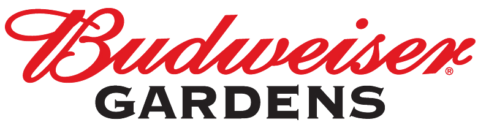
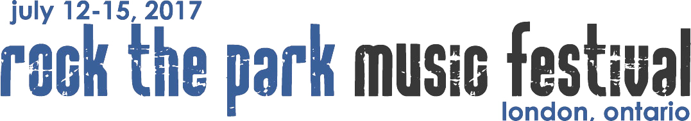

- Green Day (2017)
- The Lumineers (2017)
- Dixie Chicks (2017)
- Elton John (2017)
- Carrie Underwood (2017)
- Selena Gomez (2017)
- James Taylor (2017)
- Hedley (2017)
- Metric (2016)
- Ed Sheehan (2016)
- Bryan Adams (2016)
- Backstreet Boys (2015)
- Black Sabbath (2014)
- Kings Of Leon (2014)
- Matchbox Twenty (2013)
- KISS (2013)
- Tom Petty & The Heartbreakers (2013)
- Kid Rock (2011)
- Nickelback (2015)
- Shania Twain (2015)
- Barenaked Ladies (2015)
- Jason Aldean (2016)
- Frankie Valli and the Four Seasons (2016)

- Trooper (2005, 2007)
- REO Speedwagon (2005, 2012)
- Styx (2006, 2013)
- Kim Mitchell (2006)
- Alice Cooper (2006, 2010)
- Pat Benatar (2007)
- Cheap Trick (2007, 2011)
- The Tragically Hip (2009, 2013)
- 3 Doors Down (2010)
- Lynyrd Skynyrd (2010)
- Heart (2010)
- April Wine (2010)
- Poison (2011)
- Meat Loaf (2011)
- Stone Temple Pilots (2011)
- Our Lady Peace (2011)
- The Steve Miller Band (2012)
- Boston (2012)
- Journey (2013)
- Whitesnake (2013)
- Weezer (2014)
- Rise Against (2015)
- Keith Urban (2015)
- Train (2015)
- Mac Miller (2016)
- Brad Paisley (2016)
- City and Colour (2016)
- Sublime (2017)
- The Offspring (2017)
- Banners (2017)
- Simple Plan (2017)
- Sam Roberts Band (2017)
- The Trews (2016)
- Dan + Shay (2016)
- Half Moon Run (2016)
- Machine Gun Kelly (2016)
- Wintersleep (2016)
- Coleman Hell (2016)
- Neon Dreams (2016)
- Theory Of A Deadman (2016)
- Ivory Hours (2016)
- Steve Earle & The Dukes (2016)
- Motionless In White (2016)
- Modest Mouse (2015)
- Porter Robinson (2015)
- Edward Sharpe and the Magnetic Zeroes (2015)
- Jimmy Eat World (2017)
- Son real (2017)
- Darcy\rquote s & Bear Mountain (2016)
- Fully Black (2016)
- Chantal Kreviazuk (2016)
- Big Naked (2016)
- Zeds Dead (2016)